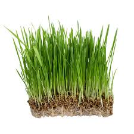

Our Products

BEETROOT
- Beet microgreens, rich in vitamins A, C, K, iron, magnesium, and potassium, are nutrient-dense.
- They contain betalains, potent antioxidants supporting heart health, boosting immunity, and aiding detoxification.
- High levels of folate and manganese in beets are essential for energy production and bone health.

Radish pink
- Radish microgreens are a nutrient powerhouse, boasting high levels of vitamins C, copper, and folate.
- They’re rich in antioxidants, promoting cellular repair, and essential minerals like calcium and iron.
- Their distinct peppery flavor adds a unique touch to meals, making them versatile to any diet.

Fenugreek
- Fenugreek is most widely used in Indian cuisine.
- Fenugreek microgreen leaves are highly beneficial for treating poor liver functions and dyspepsia.
- It helps in controlling blood sugar levels as galactomannan, a natural soluble fiber present in Fenugreek slows down the rate of sugar absorption into the blood.
- It also contains amino acid responsible for inducing the production of insulin

Peas
- Pea microgreens have been found to aid in anemia, cancer prevention, and overall heart health.
- They are high in antioxidants and phytonutrients which are necessary in supporting the body’s inflammation system.
- They are also a great source of antioxidants, which can help protect your cells from damage caused by free radicals. 4
- This can reduce the risk of chronic diseases like cancer, diabetes, and heart disease.

Amaranthus Red
- Amaranthus red helps in boosting the immune system, protecting the body from cardiovascular and hypertension diseases, ensuring proper treatment against cancer and maintaining healthy digestion levels.
- It also improves the quality of the human eyesight and decreases the hair and skin problems such as hair loss and early signs of ageing

Sunflower
- Sunflower microgreens are among the most complete foods you can add to your diet to improve nutrition.
- Sunflower shoots are a great source of protein for vegetarians.
- They are low in calories and high in nutrition, making them ideal for any natural and healthy fat-loss program.
- It helps to maintain healthy immune, cardiovascular, and nervous systems.

Wheat Grass
- Improves blood sugar levels
- Lowers cholesterol levels
- Prevents cancer
- Improve symptoms of ulcerative coliti

Oat Grass
- The young tender leaves of oat grass microgreens are beneficial in managing digestive health, UTIs, menstrual cycle and osteoporosis.
- Helps the body deal with arthritis.
- Improves stress levels.
- Aides in soothing the negative effects of depression and exhaustion.
- Helps with womens' health issues and estrogen deficiency

Finger Millet (Ragi)
- An excellent source of iron, which is essential for producing red blood cells and helps fight anaemia.
- It's naturally gluten-free!
- Prevents hair loss and promots hair growth
- It helps to reduce the risk of fractures and osteoporosis.

Pearl Millet (Kambu)
- It helps prevent diabetes, cancer, asthma.
- It controls cholesterol and helps with digestion.
- It detoxifies your body.
- It is gluten free and good for your muscles.

Black Gram
- It contains many essential fatty acids, has anti-inflammatory and anti-aging properties, helps with digestion and keeps your heart healthy.
- Black Urad Dal is extremely healthy and nutritious. As a microgreen, the nutritional values are made more readily available to the body.
- It is high in iron, rich in Vitamins and Minerals and low in fat.

Horse Gram
- Purify Blood, Detoxify Liver, Regulate Digestive System.
- Flush Out Worm Infections, Regulates, Blood Glucose Level, Attain Satiety.
- Scavenge Cancer Causing Free Radicals, Increase Energy Levels.
- Increase Haemoglobin Content in Blood, Regulate Menstrual Cycles, Lower Bad Cholesterol.